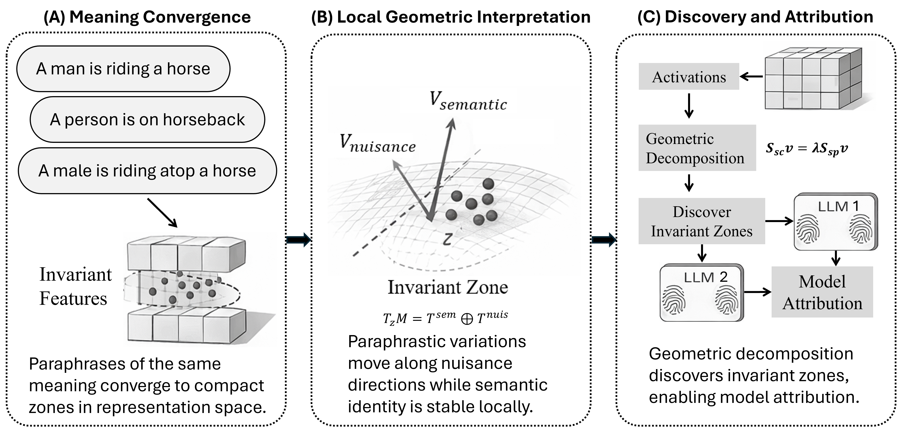
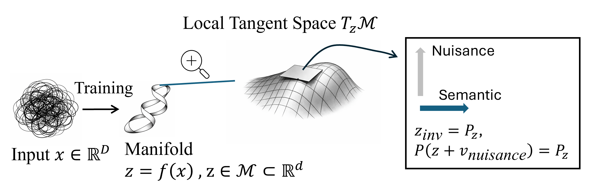
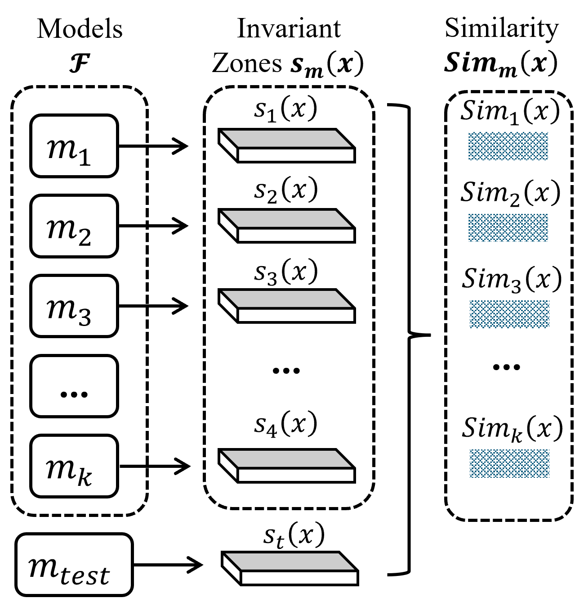
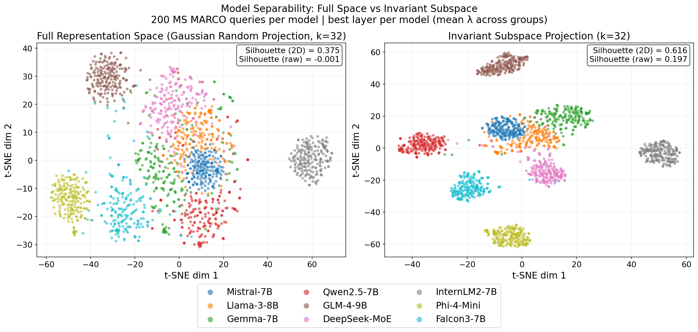
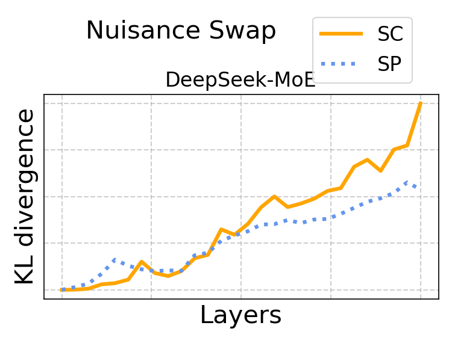

We give a local geometric characterization of semantic invariance in language models: paraphrases tend to move along nuisance directions, while meaning lives in a more stable subspace. Contrasting meaning-preserving and meaning-changing edits recovers that subspace. Interventions test it, and its model-specific geometry supports zero-shot model attribution.

Figure 1. (A) Paraphrases propagate through layers and tend to converge to compact zones. (B) Local geometric interpretation: nuisance vs semantic tangent directions. (C) Geometric decomposition detects invariant zones for model attribution.
Problem
Language models give consistent answers to prompts that are worded differently. This suggests they represent meaning in a way that is stable under paraphrasing. But a raw hidden state mixes meaning with surface form, so two paraphrases can sit far apart while two different questions sit close together. Prior work shows semantic structure exists in these representations, but does not separate meaning preserving variation from meaning changing variation. We ask where a stable semantic subspace exists, how to find it, and whether it differs between models.
1,400 semantic groups · 13 domains · 57,400 sentences · each group: 1 anchor, 20 SP, 10 soft SC, 10 hard SC · disjoint discovery and validation splits.
Method
Local geometric definition
Invariant features are stable under meaning preserving edits and still distinguish different meanings. Locally, the tangent space splits approximately into semantic and nuisance directions.

Figure 2. Local geometric hypothesis of semantic invariance. Paraphrases move along nuisance directions; invariant features come from projecting those directions away.
Contrastive sensitivity decomposition
From the hidden state changes caused by SP edits and by SC edits, compute two covariances, SSP and SSC. Solve the generalized eigenproblem
Directions with large λ vary a lot under meaning changes and little under paraphrases. The top k form the invariant subspace. Its orthogonal complement is the nuisance subspace, giving z = zinv + znuis.
Zero shot attribution
Concatenate the invariant projections from the layers with the strongest separation (the "invariant zone") into a model signature, and match a test model to the closest reference signature.
00

Figure 3. Attribution by matching invariant-zone signatures across reference models.
Results
Meaning lies outside the nuisance subspace
Displacement between semantic groups puts little of its energy in the nuisance subspace, much less than with PCA or cPCA subspaces. Enuis is the fraction of the displacement between two group centroids that lies in the nuisance subspace.
Figure 4. Layerwise nuisance projection energy for Llama (Ours vs cPCA vs PCA).
Interventions: the invariant subspace controls meaning
Swapping in the invariant component from a paraphrase barely changes the next token distribution. Swapping it from a different meaning changes it a lot.
How a swap works
Each hidden state is drawn as one bar: the left half is the invariant (meaning) part; the right half is the nuisance (surface) part. A swap copies one half from a donor and keeps the other half from the original, then we measure next-token KL.
Invariant / meaning Nuisance / surface form
In Figure 5, donors are within-group SP (paraphrase), within-group SC (soft meaning change), or between-group (different topic). Figure 6 averages invariant vs nuisance swaps over 1,400 groups with bootstrap intervals.
We swap only the invariant component to test whether that subspace carries meaning. Across models, paraphrase donors barely move the next-token distribution, while soft meaning changes raise KL and between-group donors raise it most.
Figure 5. Invariant-swap KL on the final-token hidden state for one group, averaged over the top 4 invariant layers.
We repeat the intervention idea at scale, comparing invariant swaps with nuisance swaps over many groups. Invariant swaps produce larger KL than nuisance swaps for every model at every reported layer, with narrow bootstrap intervals.
Figure 6. Mean over 1,400 semantic groups with 95% bootstrap confidence intervals (1,000 resamples). Invariant swaps produce larger changes than nuisance swaps for every model at every reported layer. Y axis shows only the selected layer.
Y axis: KL divergence (log scale). Whiskers are 95% CI half-widths from Table 16.
Zero shot model attribution
Invariant zone signatures identify the source model, including after fine tuning and distillation, and do better than PCA and cPCA signatures.
Figure 7. Attribution accuracy (%) for Base (B), Fine tuned (FT), and Distilled (D) variants.
We compare invariant-zone signatures to PCA and cPCA baselines with matched subspace size, averaged over four model families.
Figure 8. Averaged over Llama, Mistral, Qwen2.5 and Gemma with matched subspace dimension.
Visualizing geometric separability
Figure 9 compares model separability on 200 MS MARCO queries per model. The left panel reduces full hidden states with a Gaussian random projection before t-SNE. The right panel projects into the invariant subspace learned on the controlled SP/SC dataset and held fixed on these natural queries.

Figure 9. Side-by-side t-SNE of model separability with 200 MS MARCO queries per model (k = 32). Left: full representation space via Gaussian random projection. Right: invariant subspace projection.
Stress tests and ablations
Semantic ambiguity
We stress the subspace with scope, punctuation, and attachment ambiguities, where small wording changes can flip the intended parse. Clear paraphrases and clear meaning changes are included as controls.
Our subspace keeps lower nuisance energy than PCA and cPCA (layer 4: 0.0084 vs 0.0718 cPCA vs 0.0921 PCA), which suggests the decomposition still separates surface form from meaning when the meaning change is subtle.
Example: "I saw the man who was holding a telescope." → "I saw the man with a telescope."
Multihop reasoning
We also check short two-step reasoning chains, where an intermediate fact can stay fixed (SP) or be rewritten to change the answer (SC). The question itself stays the same.
Swapping the semantic component changes outputs more than swapping the nuisance component (layer 4 KL: 0.360 vs 0.069), which matches the intervention story from the main results.
Example: "Maya lives in Brookfield. Brookfield is in Canada." (SC: "...is in France").
Pooling
Hidden states can be read from the last token or averaged over the sequence. We repeat the same decomposition and intervention protocol under both choices.
Mean pooling and last-token pooling both keep SC effects above SP effects, and last-token pooling moves paraphrases less (Llama, layer 3, SP KL: 0.000037 last token vs 0.001190 mean), so we use last-token pooling as the default readout.
Subspace size
The invariant subspace is formed from the top k generalized eigenvectors. If the useful structure were high dimensional, results would change sharply with k.
Intervention behavior stays similar for k = 1, 10, and 32, which suggests that the main invariant structure is low dimensional and not an artifact of one rank choice.
Limitations
The decomposition is local and approximate: each semantic group has its own invariant subspace. It is not a universal decomposition of language representations.
The dataset is synthetically constructed in English with short inputs. Naturally occurring, multilingual and long context inputs remain to be evaluated.
The nuisance subspace is not fully disentangled. Nuisance swaps still cause some output change, even with paraphrase donors, so it may hold residual semantic information.

Figure 10. SP and SC nuisance swaps rise together with depth, without consistent separation.
Citation
NeurIPS 2026
@inproceedings{dasgupta2026invariant,
title = {Invariant Features in Language Models: Geometric Characterization and Model Attribution},
author = {Dasgupta, Agnibh and Tanvir, Abdullah All and Zhong, Xin},
booktitle = {Advances in Neural Information Processing Systems},
year = {2026}
}
Preprint
@article{dasgupta2026invariantArxiv,
title = {Invariant Features in Language Models: Geometric Characterization and Model Attribution},
author = {Dasgupta, Agnibh and Tanvir, Abdullah All and Zhong, Xin},
journal = {arXiv preprint arXiv:2605.06458},
year = {2026}
}